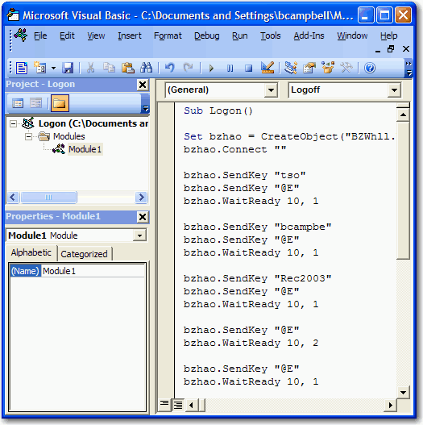

The Visual Basic Editor or sometimes referred to as the VBA IDE, can be launched from the Macro menu. Click from the menu bar or it can be launched by clicking the VBA IDE toolbar icon . The standard Microsoft Visual Basic Editor launches:

Microsoft Visual Basic Help can be launched from within the Visual Basic Editor. Click from the Visual Basic menu bar. Microsoft Visual Basic Help launches.